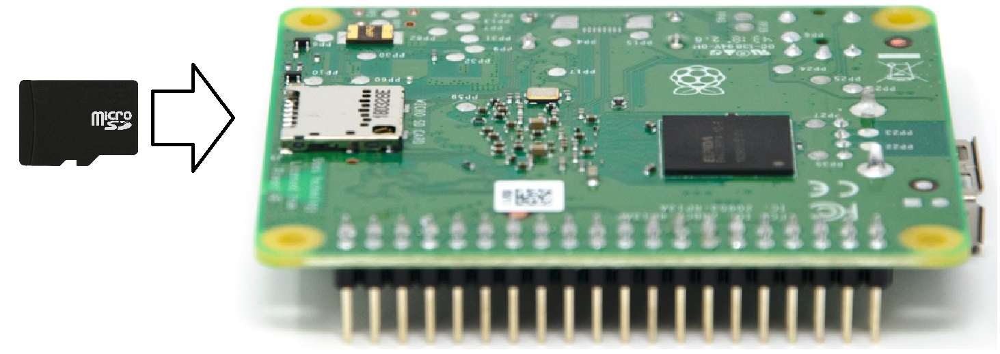
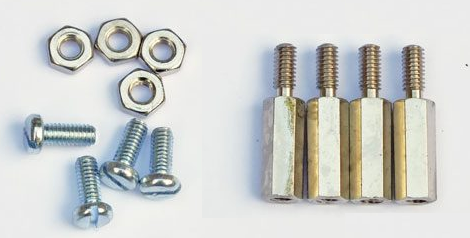
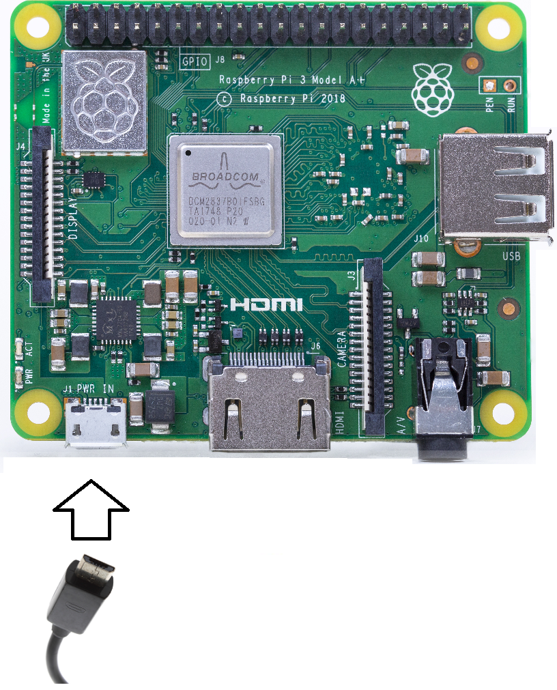
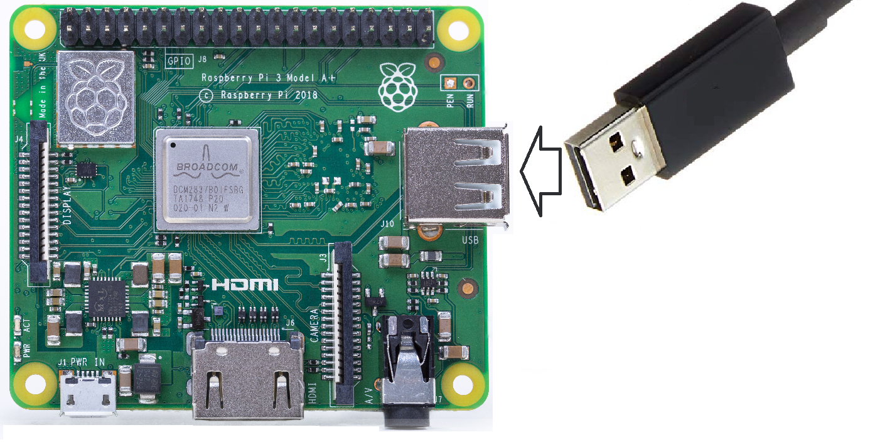

Cette page décrit comment préparer un Raspberry Pi 3A+. Si vous disposez d'un autre Raspberry, consultez la page correspondante.
Insérez la carte SD configurée dans le Raspberry Pi.
Branchez la carte QuickPi ou la carte Grove sur le Raspberry Pi.
Utilisez des vis pour bien l'attacher.
Si vous utilisez un chargeur, branchez le sur le port micro USB PWR IN.
Si par contre vous utilisez un câble USB relié à votre ordinateur, branchez le sur le port USB.
